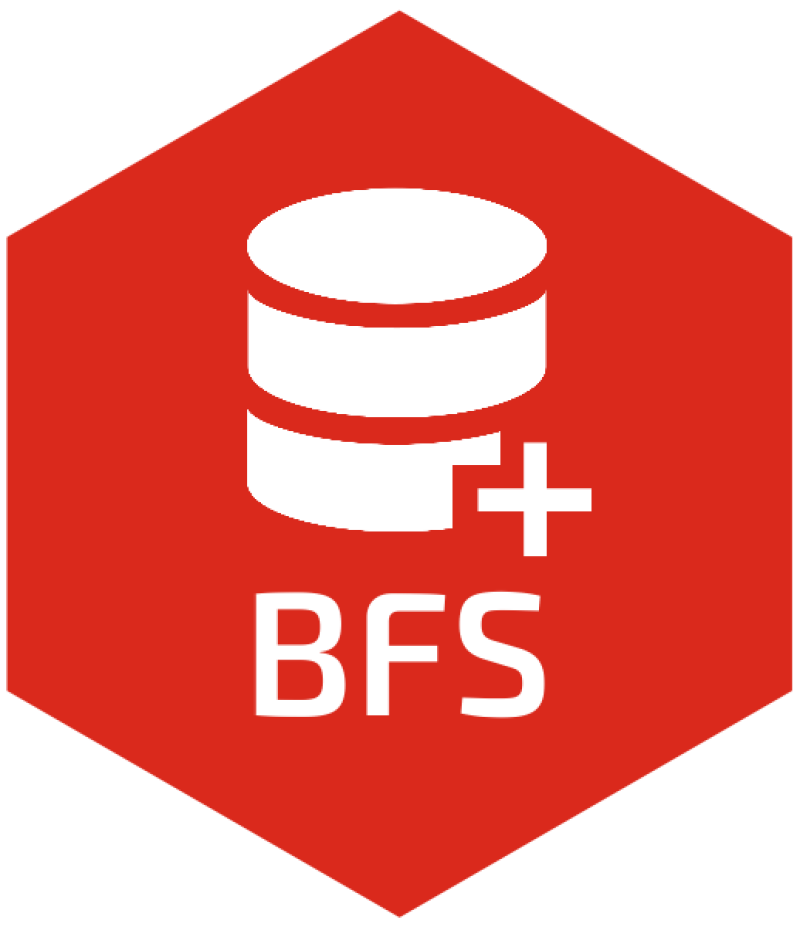

Package index
-
bfs_get_catalog() - Get the BFS data or table catalog
-
bfs_get_catalog_data() - Get the BFS data catalog
-
bfs_get_catalog_tables() - Get the BFS tables catalog
-
bfs_get_data() - Get BFS data in a given language
-
bfs_get_metadata() - Get metadata of a BFS data in a given language
-
bfs_get_data_comments() - Get the comments/footnotes of a BFS dataset in a given language
-
bfs_download_asset() - Download a BFS asset file
-
bfs_get_asset_metadata() - Get asset metadata in a given language
STAC API
STAC is a specification of files and web services used to describe geospatial information assets.
-
bfs_get_catalog_geodata() - Get the geodata catalog of the Swiss Confederation
-
bfs_download_geodata() - Download a geographic file from the Swiss geo-portal
-
bfs_get_base_maps() - Get Switzerland base maps data
Commune Register
The Swiss official commune register is structured according to cantons and districts or comparable administrative entities. Various federal, cantonal and communal governments and private businesses use this register when identifying and referring to communes.
-
register_dic - Swiss official commune register Dictionary
-
register_bzn - Swiss official commune register BZN
-
register_gde - Swiss official commune register GDE
-
register_gde_other - Swiss official commune register GDE Other
-
register_kt - Swiss official commune register KT
-
register_kt_seeanteile - Swiss official commune register KT Seeanteile